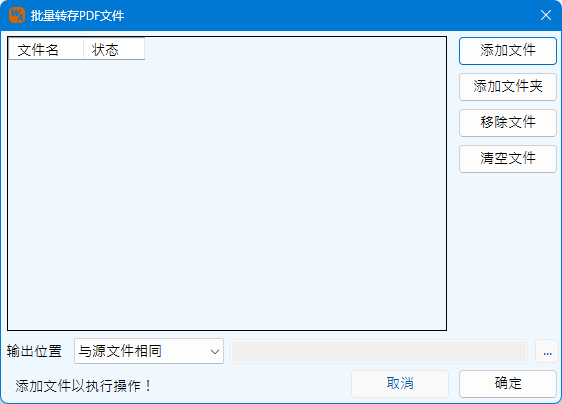

为Word提供一些便捷的操作工具，暂时仅批量转存PDF功能一项。
单击工具箱下批量转存PDF按钮调出如下工作界面：
通过界面右侧的添加文件、添加文件夹、移除文件、清空文件按钮进行文件的选择操作，本功能仅为Word文件转存PDF文件使用，因此文件只识别“*.doc”和“*.docx”后缀的文件。列表框支持拖拽输入，将Word文件拖拽进入列表框，也可以选择输入文件。
同一个文件夹下相同的文件名的文件不可以重复添加，但是不同文件夹下，相同文件名的文件可以添加。
输出位置提供两种输出方式，一种为在Word文件所在目录直接输出PDF文件，另一种是集中输出到指定的文件夹下。
使用转存PDF文件功能需注意如下事项：